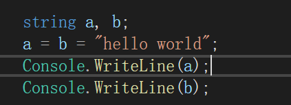
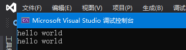

第一章 c#概述
基础知识
- 关键字的概念。
- Main方法。
- 语句以及语句分隔符’;’。
- 代码缩进规范。
- 变量的声明、赋值、使用。
- 控制台基本IO语句：System.Console.WriteLine(),System.Console.Write(),System.Console.ReadLine(),System.Console.Read()的使用和区别。
- 注释的使用。
查漏补缺
- c#编译生成的是程序集。
- 与c++和java不同，Main方法M要大写。
- 支持使用”连等”。

 - 要尽量编写清晰的代码，而不是通过注释澄清复杂的算法。
- 编译器会将c#的源代码文件转为另一种中间语言（IL）,CLR负责把IL编译为机器码。
- 托管代码与非托管代码：
- 托管代码在CLR上运行，可以享受运行库的服务：GC、安全支持，如c#、VB。
- 非托管代码直接在机器上被编译成机器码，需要自己管理内存、提供安全检测，如C。
- c++可以创建非托管程序。
第二章 数据类型
基础知识
- 8种整型变量：sbyte,byte,short,ushort,int,uint,long,ulong。u开头的变量表示取值范围非负。
- 3种浮点类型：float,后缀为f或F；double,后缀为d或D；decimal，后缀为m或M。
- 字面量：源码中的固定值，如42或1.618034，直接将值放入源码中称为硬编码。
- bool,char,string。
- 一些字符需要通过转义字符输入到源代码中，如：’ “ \
- string操作的一些静态方法和实例方法
- 字符串是不可变的！
- null与void。
- 隐式类型var。
- 值类型与引用类型
- 值类型变量引用的位置就是值在内存中实际存储的位置。
- 引用类型储存的是对数据存储位置的引用，指向的内存区域为堆。
- 一般不能把null赋给值类型，如果需要赋值，加入?。
1
int?=null;
- 显式转型与隐式转型。
- Parse()方法与ToSting()方法。
- 数组的声明、赋值、使用、遍历。
- new关键字会让“运行时”为数据类型分配内存。
- 数组的长度固定。
- 数组越界的概念.
查漏补缺
- BCL中有完整类型命名，在所有语言中通用，例如System.Int32,System.String。而c#则提供了短名称，例如int,string。这两种编译成的CIL代码是相同的。
- 如果一个浮点数在表示为分数时分母不是2的整数次幂，那么二进制浮点类型无法准确的表示该数。
- decimal类型为十进制浮点类型，是准确的，可保留有效数字28-29位。
- 格式说明符。
- @符号可以使输出忽略转义字符。例如Console.WriteLine(@”begin/////“)可正确编译
- 通过使用字符串插值格式可以让字符串嵌入表达式。
1
2string name = "ReplyRen";
Console.WriteLine($"My name is {name}"); - checked与unchecked块:在checked中发生一次溢出的赋值就会抛出异常；在unchecked中即使溢出也会强制不抛出异常。
- Parse()可能引发异常，而TryParse()则不会。
- 交错数组：由数组构成的数组
1
2
3
4
5
6int[][] cells={
new int[]{1,0,2,0},
new int[]{1,20},
new int[]{1},
new int[]{2,3,4,5,6}
};